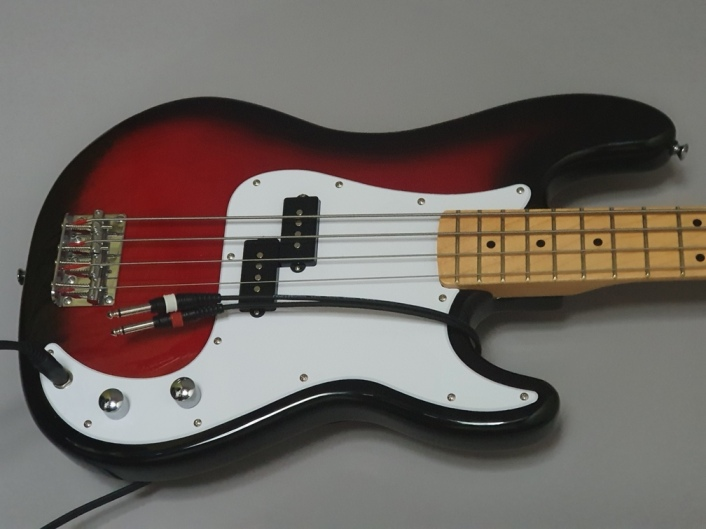

I modified a Telecaster guitar to output a stereo signal.
It plays the bottom (bass) three strings on the left stereo channel and the treble strings on the right channel.
To get that, I replaced the pickup with a split-blade pickup, which has two coils in line.
They are both connected but I tapped the signal in the middle and ran it out through a stereo jack.
I put in a second tone pot. This way I can set a separate cut off frequency (dial in a tone) for the lower three strings and the upper three.
The volume pot got replaced with a stereo one, which is essentially two stacked pots controlled by one shaft.
To make it possible to switch back to mono, I swapped the pickup selector for a five-way 'megaswitch', which allows for a lot of combinations.
Here is a bit of a demo of how it sounds:
I did the same with this P-Bass. In this case it was simpler because it already comes with split coil pickups.
All I had to do was tap the wire between the two parts of the pickup and run it out through a stereo jack.
I replaced one pot with a push-pull pot to switch between mono and stereo. Pushed in, the instrument behaves as it came from the factory.
In the case of a bass there might be less of a point in separating the signal because you do not play those arpeggios across the fretboard, which bring the stereo signal to shine. But there might still be value in having a separate signal chain for the upper two and lower two strings, e.g. to shape a different tone for slapping.
